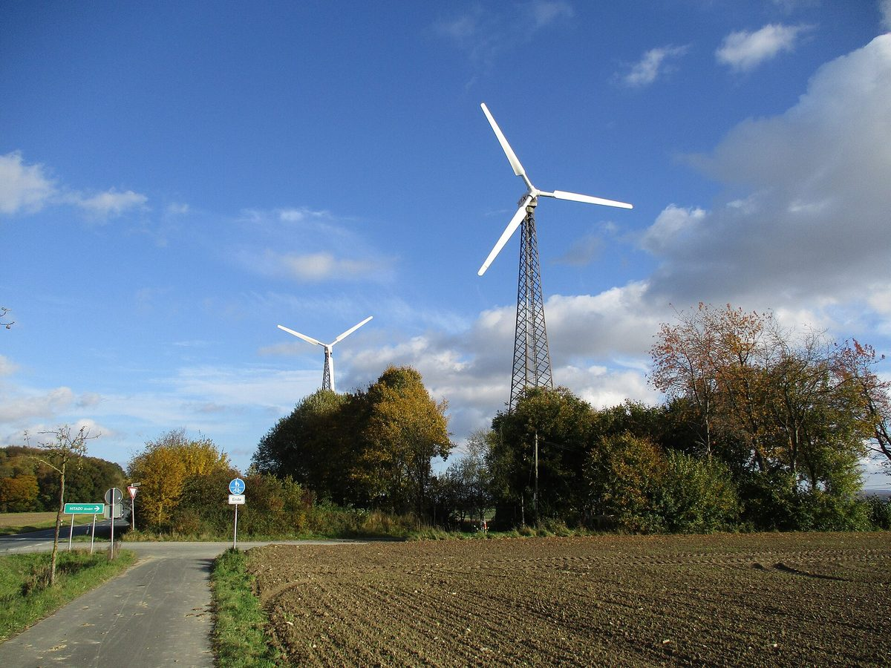

독일 뫼네제 풍력 사업자 9곳, 수익 나눌 '주민·에너지 재단' 정관 초안 제시…11월 3일 의회 논의

시 예산에 바로 넣는 '엔제 모델'과 재단 사이 3년 넘게 오락가락…첫 이사회는 사업자가 정하는 초안, 이미 약정한 사업자만 1MW당 해마다 1,000유로 자발 출연 제안
독일 노르트라인베스트팔렌주 뫼네제(Möhnesee) 게마인데에서 풍력 사업자 9곳이 풍력 수익 일부를 지역에 돌릴 '주민·에너지 재단 뫼네제' 설립안을 내놓았고, 게마인데 의회가 11월 3일 오후 5시 30분(현지 시각) 이를 다룬다. 독일은 2021년부터 재생에너지법(EEG)에 따라 새 풍력 사업자가 영향을 받는 지자체에 생산 전력 1kWh당 0.2센트를 낼 수 있게 했고 2023년 초 기존 설비로 넓혔으며, 2023년 말 시행된 주 시민에너지법으로 이 금액은 사실상 의무가 됐다. 뫼네제에서는 3년여 전 사업자들이 재단을 처음 제안했으나 행정은 돈을 지자체 예산에 바로 넣는 '엔제 모델'을 택했고, 2025년 9월 지방선거 직전 옛 의회가 14 대 12로 이를 의결했다가 올해 3월 말 새 의회가 다른 방식도 허용하면서 재단 논의가 되살아났다. 사업자들이 낸 정관 초안에 따르면 재단은 청소년·노인 지원, 문화, 자연·기후 보호, 체육 같은 공익 목적에만 돈을 쓰고, 3~5명으로 꾸리는 이사회(임기 5년)는 5,000유로까지 혼자 결정하되 그 이상은 감독위원회와 함께 정한다. 첫 이사회는 출연자인 사업자가 정하고 첫 감독위원회도 사업자가 시장과 협의해 정하도록 돼 있으며, 사업자들은 감독위원회를 시장과 지방정치권 2명, 사업자 2명 등 5명으로 꾸리자고 제안했다. 재단에 들어갈 총액은 정해지지 않았고 이미 시와 약정을 맺은 사업자들만 연결용량 1MW당 해마다 1,000유로를 자발적으로 내겠다고 밝혔으며, 사업자들은 지방행정청 심사에 정관을 내기 전 의회의 지지 신호를 바라고 있지만 이번 회의에서 곧바로 결정이 나지는 않는다.
시민에너지 관점
같은 풍력 수익을 두고 뫼네제가 3년 넘게 '시 예산이냐 재단이냐'를 오가며 14 대 12로 갈렸다는 것은 이익 공유의 핵심이 금액보다 그 돈을 누가 쥐고 어디에 쓰느냐에 있다는 점을 보여 준다. 공익 재단은 예산 메우기에 묻히지 않는다는 장점이 있지만, 첫 이사회와 감독위원회를 출연자인 사업자가 정하는 구조라면 주민은 여전히 나눠 받는 쪽에 머문다. 주민이 발전소 지분을 갖고 총회에서 쓰임을 정할 때 이익 공유는 시혜가 아니라 권리가 된다. 국내 풍력 이익공유도 기금 규모를 다투기 전에 배분 기구에 주민 대표가 얼마나 들어가는지, 주민이 지분을 살 길이 열려 있는지부터 따져야 한다.
출처: Soester Anzeiger 2026-10-30 Joel Hunold 원문 보기
ドイツ・メーネゼーの風力事業者9社、収益を分ける「住民・エネルギー財団」の定款案を提示…11月3日に議会で議論
自治体予算に直接入れる「エンゼ・モデル」と財団の間で3年以上揺れる…初代理事会は事業者が決める案、既に協定を結んだ事業者のみ1MW当たり年1,000ユーロの自主拠出を提案
ドイツ・ノルトライン＝ヴェストファーレン州のメーネゼー（Möhnesee）で、風力事業者9社が風力収益の一部を地域に還元する「住民・エネルギー財団メーネゼー」の設立案を示し、町議会が11月3日午後5時30分（現地時間）にこれを取り上げる。ドイツでは2021年から再生可能エネルギー法（EEG）に基づき、新設の風力事業者が影響を受ける自治体に発電量1kWh当たり0.2セントを支払えるようになり、2023年初めに既存設備にも広がり、2023年末に施行された州の市民エネルギー法でこの額は事実上の義務となった。メーネゼーでは3年余り前に事業者が初めて財団を提案したが、行政は資金を自治体予算に直接入れる「エンゼ・モデル」を選び、2025年9月の地方選挙直前に旧議会が14対12でこれを議決したものの、今年3月末に新議会が他の方式も認めたことで財団案が息を吹き返した。事業者がまとめた定款案によると、財団は青少年・高齢者支援、文化、自然・気候保護、スポーツなど公益目的にのみ資金を使い、3～5人の理事会（任期5年）は5,000ユーロまでを単独で決め、それを超える分は監督委員会と共に決める。初代理事会は拠出者である事業者が決め、初代監督委員会も事業者が町長と協議して決める案で、事業者は監督委員会を町長、地方政界2人、事業者2人の計5人とするよう提案した。財団に入る総額は決まっておらず、既に町と協定を結んだ事業者だけが接続容量1MW当たり年1,000ユーロを自主的に拠出するとしており、事業者は地方行政庁の審査に定款を出す前に議会の支持のシグナルを求めているが、今回の会議ですぐに結論が出るわけではない。
市民エネルギーの視点
同じ風力収益をめぐってメーネゼーが3年以上「自治体予算か財団か」で揺れ、14対12に割れたことは、利益共有の核心が金額よりも、その資金を誰が握り何に使うかにあることを示している。公益財団には予算の穴埋めに消えないという利点があるが、初代理事会と監督委員会を拠出者である事業者が決める仕組みなら、住民は相変わらず分けてもらう側にとどまる。住民が発電所の持分を持ち、総会で使い道を決めるとき、利益共有は施しではなく権利になる。韓国の風力の利益共有も、基金の規模を争う前に、配分機関に住民代表がどれだけ入るのか、住民が持分を買える道が開かれているのかから問うべきだ。
出典: ゾースター・アンツァイガー 2026-10-30 ヨエル・フノルト 原文を読む
德国默讷湖镇9家风电运营商提出分享收益的"居民与能源基金会"章程草案…11月3日交议会讨论
收益直接进地方预算的"恩泽模式"与基金会之间反复三年多…草案规定首届理事会由运营商决定，仅已签约的运营商提出每兆瓦每年自愿出资1,000欧元
德国北莱茵-威斯特法伦州默讷湖镇（Möhnesee）的9家风电运营商提出设立"默讷湖居民与能源基金会"，把部分风电收益回馈地方，镇议会将于当地时间11月3日17时30分讨论此事。德国自2021年起依据《可再生能源法》（EEG），允许新建风电运营商按每发1kWh电0.2欧分向受影响的地方政府付款，2023年初扩大到既有设备，2023年底施行的州《公民能源法》使这笔钱实际上成为义务。默讷湖的运营商三年多前首次提议设基金会，但行政部门选择把钱直接纳入地方预算的"恩泽模式"，2025年9月地方选举前夕旧议会以14票对12票通过该模式；今年3月底新议会又决定允许其他参与方式，基金会方案由此复活。根据运营商提交的章程草案，基金会只把钱用于青少年和老人扶助、文化、自然与气候保护、体育等公益目的，由3至5人组成的理事会（任期5年）可自行决定5,000欧元以内的支出，超过部分须与监事会共同决定。草案规定首届理事会由出资的运营商决定，首届监事会也由运营商与镇长协商确定；运营商建议监事会由镇长、地方政界2人和运营商2人共5人组成。基金会的资金总额尚未确定，只有已与镇政府签约的运营商表示愿按并网容量每兆瓦每年自愿出资1,000欧元；运营商希望在把章程提交地区行政机关审查前得到议会的支持信号，但此次会议不会当场作出决定。
市民能源视角
围绕同一笔风电收益，默讷湖三年多来在"地方预算还是基金会"之间摇摆，并以14票对12票分裂，这说明利益共享的关键不在金额，而在于谁掌握这笔钱、用在哪里。公益基金会的好处是不会被拿去填补预算窟窿，但如果首届理事会和监事会都由出资的运营商决定，居民仍只是被分配的一方。只有居民持有电站股份、在大会上决定用途时，利益共享才不是施舍而是权利。韩国的风电利益共享也应在争论基金规模之前，先看分配机构里有多少居民代表、居民是否有购买股份的渠道。
来源: 《索斯特导报》 2026-10-30 约埃尔·胡诺尔特 查看原文
Nine wind operators in Germany's Möhnesee propose a "citizens' and energy foundation" to share revenue; council to discuss on November 3
Three years of back-and-forth between paying into the municipal budget (the "Ense model") and a foundation; draft lets operators pick the first board, and only those with existing agreements offer a voluntary €1,000 per MW a year
Nine wind operators in the municipality of Möhnesee in North Rhine-Westphalia, Germany, have proposed a "Citizens' and Energy Foundation Möhnesee" to return part of their wind revenue to the area, and the municipal council will take up the plan at 5:30 p.m. local time on November 3. Since 2021, Germany's Renewable Energy Sources Act (EEG) has allowed new wind operators to pay affected municipalities 0.2 cents per kWh generated; the rule was extended to existing turbines in early 2023, and the state's Citizen Energy Act, in force since late 2023, made the payment effectively mandatory. In Möhnesee, operators first suggested a foundation more than three years ago, but the administration preferred the "Ense model," under which the money flows directly into the municipal budget; the outgoing council adopted it 14 to 12 just before local elections in September 2025, and at the end of March this year the new council opened the door to other forms of participation, reviving the foundation idea. Under the operators' draft charter, the foundation would fund only charitable purposes such as youth and elderly care, culture, nature and climate protection and sport, with a board of three to five members serving five-year terms that can decide on sums of up to €5,000 alone and larger sums together with a supervisory board. The draft has the operators, as founders, appoint the first board, and appoint the first supervisory board in consultation with the mayor; the operators suggest a five-member supervisory board made up of the mayor, two local politicians and two operator representatives. How much money the foundation will receive is open, with only operators that already have agreements with the municipality offering to pay a voluntary €1,000 a year per megawatt of connected capacity; the operators want a supportive political signal before submitting the charter to the regional authority for review, though no decision is expected at this meeting.
Citizen Energy View
That Möhnesee has spent more than three years swinging between "municipal budget or foundation" over the same wind revenue, splitting 14 to 12, shows that the heart of benefit sharing is less the amount than who controls the money and where it goes. A charitable foundation has the merit of not being swallowed by budget gaps, but if the founding operators choose the first board and supervisory board, residents remain on the receiving end. Benefit sharing becomes a right rather than a favour only when residents hold shares in the turbines and decide at a general meeting how the money is spent. Korea's wind benefit-sharing debate, too, should ask how many resident representatives sit on the body that distributes the money, and whether residents have a way to buy in, before arguing over the size of the fund.
Source: Soester Anzeiger 2026-10-30 Joel Hunold Read the original